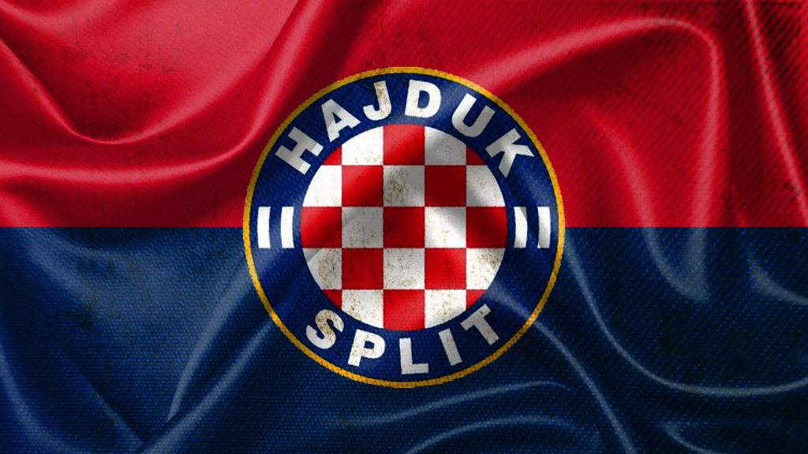
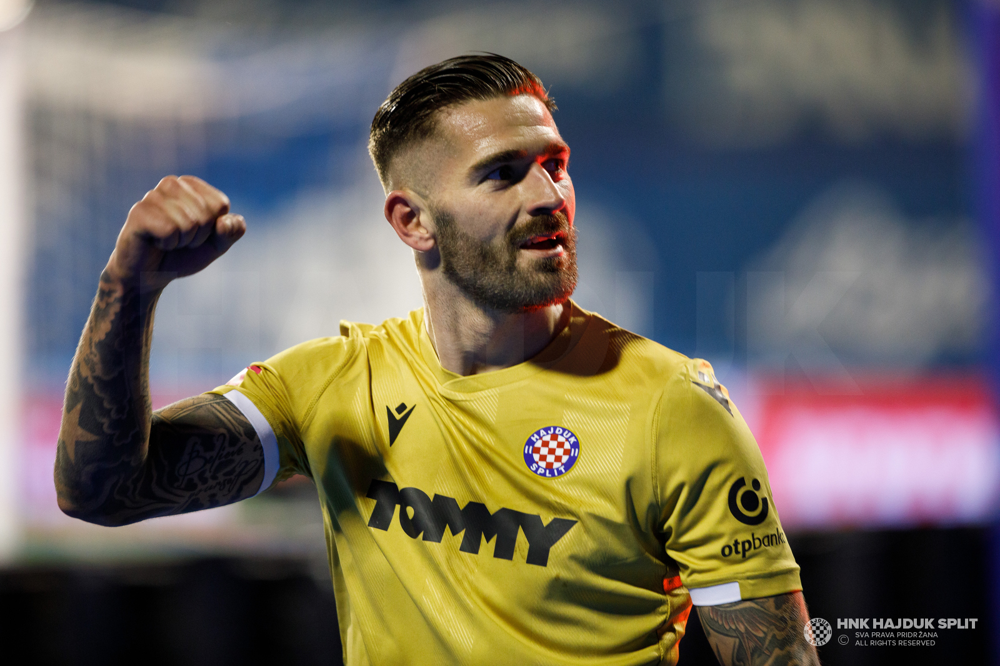

Povijest
Hrvatski nogometni klub Hajduk Split (HNK Hajduk Split) je hrvatski nogometni klub iz Splita. Najveće je športsko društvo u Splitu i jedno od većih u Hrvatskoj. Domaće utakmice igra na Gradskom stadionu u Poljudu. Kroz bogatu povijest klub je osvojio 18 prvenstava u pet država, 17 nacionalnih kupova i 5 superkupova, a najveći europski uspjesi su mu tri četvrtzavršnice Lige prvaka te po jedna poluzavršnica Kupa UEFA i Kupa pobjednika kupova. Hajduk je u veljači 1911. u Pragu osnovala skupina splitskih studenata. Oko kluba su se okupljali prohrvatski, puntarski građani, pristaše sjedinjenja kraljevine Dalmacije s kraljevinom Hrvatskom i Slavonijom. Odatle i pridjev Hrvatski u nazivu kluba, hrvatski grb kao dio Hajdukovog grba te zastava kluba s crvenom i plavom bojom te bijelim natpisom Hajduk u sredini.
Najbolji igrač
Livaja je nogometnu karijeru započeo u niželigaškim klubovima GOŠK-u iz Kaštel Gomilice i Omladincu iz Vranjica. U ljeto 2008. godine dobio je poziv Dinama. No, prije nego što je bio registriran kao igrač Dinama, dobio je poziv Hajduka iz njegovoga rodnog grada Splita. Na kraju je prešao u Hajduk. Početkom 2010. priključen je prvoj momčadi splitskog Hajduka. Istog dana kada mu je raskinut ugovor s AEK-om, Livaja se pridružio Hajduku do kraja sezone. Dana 14. svibnja 2022. godine u utakmici 33. kola 1. HNL 2021./22. odigrane protiv Istre 1961, koju je Hajduk dobio 3:2, Livaja je postigao dva pogotka iz jedanaesteraca, svoj 26. i 27. pogodak u ligaškoj sezoni. Time je oborio klupski rekord za najboljeg strijelca u ligi koji je 87 godina ranije postavio Leo Lemešić.
Navijači
.jpg)
Torcida (puni naziv: Klub navijača Hajduka Torcida, skraćeno: KNH Torcida) je navijačka skupina Hrvatskog nogometnog kluba Hajduka, osnovana 28. listopada 1950. godine. Torcida je najstarija navijačka skupina u Europi. Klub navijača djeluje na adresi Zrinsko-Frankopanska 17, Split. Slogan navijača je "Hajduk živi vječno", kojim se svjedoči o dugoj i neprekinutoj tradiciji imena koje opstoji bez promjene od osnivanja do danas (bivše države potput Austro-Ugarske, Jugoslavije i nogometne lige su propale), odakle i geslo: "Hajduk živi vječno" i "Živimo za Hajduk". Članovi Torcide kao i ostali najvatreniji navijači kluba okupljaju se na poljudskom sjeveru odakle gromoglasnim navijanjem bodre svoj klub. Godine 2020., Torcida broji preko 16.000 članova. Torcida, osim što podržava Hajduk, podržava i košarkaški klub Split jer se klubovi međusobno podržavaju.